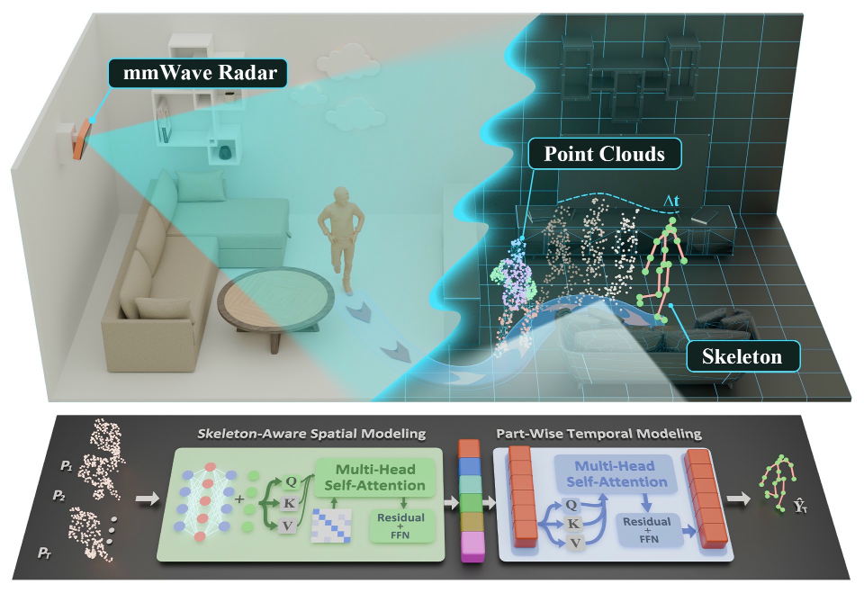
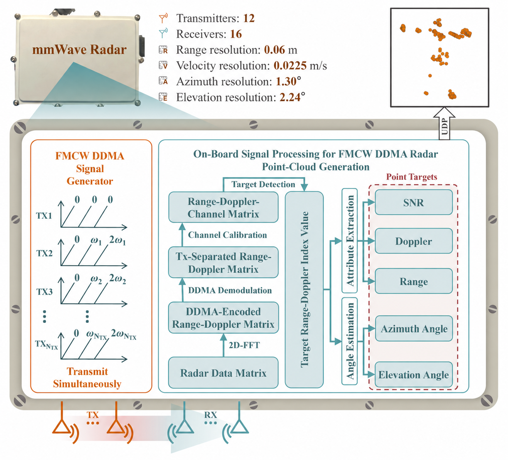
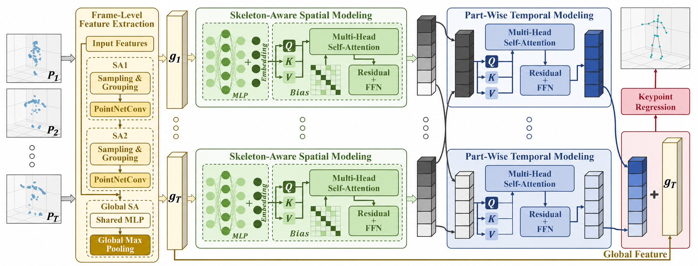

01Radar prototype
A four-chip cascaded FMCW radar captures dense human point clouds with 12 transmit and 16 receive channels.
Radar-only 3D human pose estimation
Human Pose Estimation Using Millimeter-Wave Radar: Prototype, Dataset, and Method
State Key Laboratory of Millimeter Waves, Southeast University
Purple Mountain Laboratories
Mean localization error
22.14% lower than PntPoseAT

A four-chip cascaded FMCW radar captures dense human point clouds with 12 transmit and 16 receive channels.
101 subjects, 19 designed motions and free motion, with synchronized radar, image and skeleton recordings.
Skeleton-aware spatial tokens and part-wise temporal attention recover 19 joints from radar observations.
01 / System
Four cascaded chips and Doppler-division multiple access (DDMA) bring fine angular resolution to human point-cloud sensing.

Simultaneous transmissions are separated in the Doppler domain. On-board range–Doppler processing, channel calibration, target detection and angle estimation produce 5D points: position, Doppler and SNR.
02 / Dataset
141 continuous sequences span 19 designed motions and free motion. Radar point clouds are synchronized with Kinect V2 images and 19-joint pose annotations.
03 / Interactive samples
Synchronized radar points, skeletons and images from each motion in mmWave-DensePose.
04 / Method
PAST-Net reorganizes radar features into skeleton-aware part tokens and models their temporal evolution to predict the target-frame 3D pose.

A point-cloud encoder extracts each frame’s global representation from 5D radar attributes.
Spatial modeling organizes frame features around human body parts.
Temporal self-attention follows each part across consecutive observations.
Global and part-level features fuse to locate all 19 joints in the target frame.
05 / Results
PAST-Net achieves the lowest mean localization error across all 19 joints and reduces overall MLE by 22.14% relative to PntPoseAT.
| Method | MLE ↓ cm | PA-MPJPE ↓ cm | PCK ↑ % | AUC ↑ % |
|---|---|---|---|---|
| DGCNN | 7.30 | 5.29 | 92.33 | 55.50 |
| PointTransformer | 7.17 | 5.21 | 92.85 | 55.51 |
| PointMLP | 5.60 | 4.07 | 96.45 | 64.39 |
| mmPose-FK (17 joints) | 5.57 | 4.21 | 97.07 | 63.92 |
| Dual-Path CNN–BiLSTM | 8.19 | 5.46 | 90.79 | 49.91 |
| PntPoseAT | 5.24 | 3.98 | 97.59 | 65.96 |
| PoseGraphNet | 6.70 | 5.17 | 94.23 | 57.77 |
| Global–Local Network | 9.18 | 6.09 | 87.26 | 44.48 |
| PAST-Net | 4.08 | 3.17 | 98.69 | 73.35 |
PCK and AUC use a 150 mm distance threshold. mmPose-FK evaluates 17 joints.
| Method | MLE ↓ cm |
|---|---|
| PAST-Net | 4.53 |
| PointMLP | 5.31 |
| PoseGraphNet | 5.99 |
| PntPoseAT | 6.18 |
| mmPose-FK | 6.30 |
| PointTransformer | 6.52 |
| DGCNN | 6.60 |
| Dual-Path CNN–BiLSTM | 9.38 |
| Global–Local Network | 10.73 |
Mean MLE ± standard deviation across five runs.
06 / Application
Deployment on an NVIDIA T400 GPU tracks human motion in real time, including unseen subjects and motions, occlusion and strong illumination.
07 / Citation
@article{liu2026mmwavedensepose,
author = {Liu, Jiang and Huang, Yan and Zhang, Yanjun and Tian, Chengchang and
Yang, Zhen and Zheng, Kaihang and Zhou, Rui and Zhang, Hui and
Chen, Jixin and Hong, Wei},
title = {{Human Pose Estimation Using Millimeter-Wave Radar: Prototype, Dataset, and Method}},
journal = {Engineering},
year = {2026},
doi = {10.1016/j.eng.2026.10.001},
url = {https://www.sciencedirect.com/science/article/pii/S2095809926005606}
}